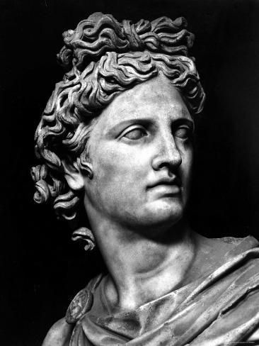
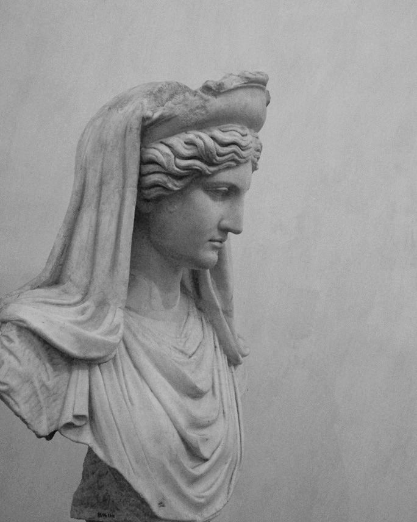
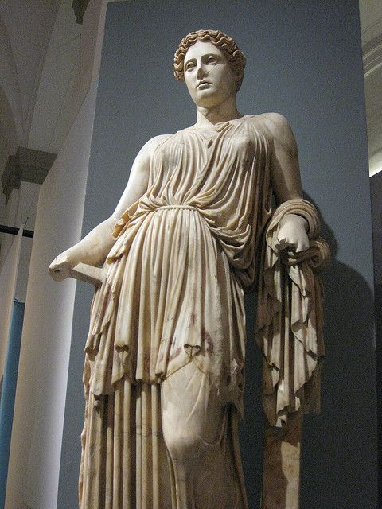
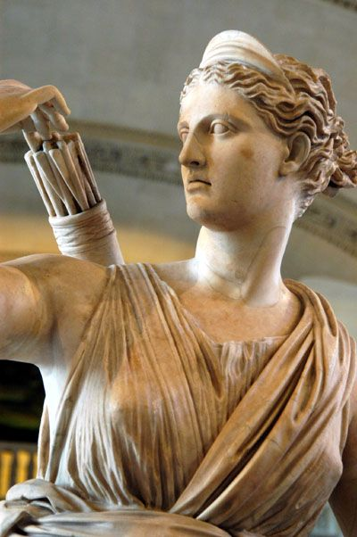
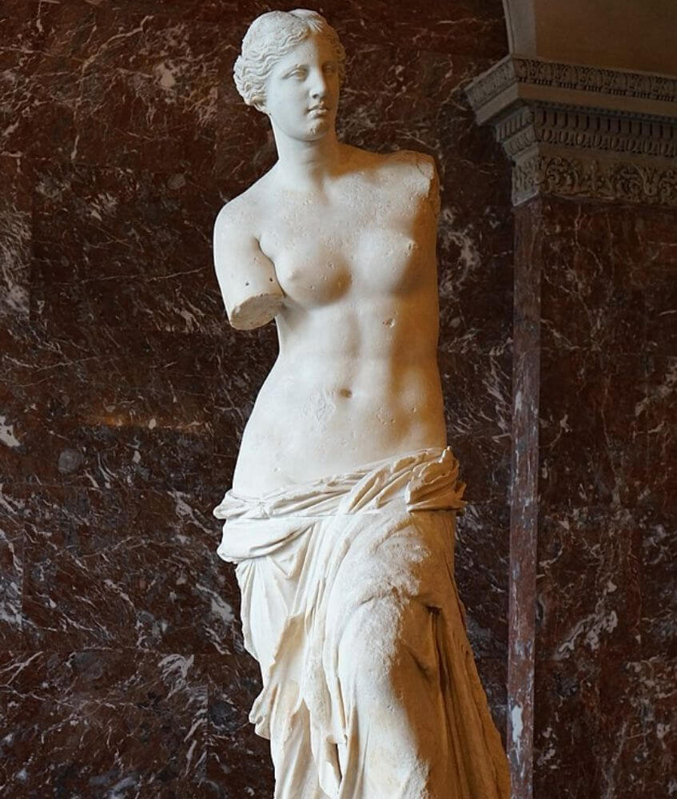

Μυθολογία
ZEUS

Zeus es una divinidad a la que se denomina a veces con el título de (padre de los dioses y los hombres), que gobierna a los dioses del Olimpo como un padre a una familia, de forma que incluso los que no eran sus hijos naturales se dirigen a él como tal. Es el rey de los dioses y supervisa el universo, es el dios del cielo y el trueno y por ende de la energía. Entre sus atributos se incluyen el cetro y la corona (como símbolos de su poder), el rayo, el águila, el toro y el roble. Hijo de Crono y Rea, era el más joven de sus descendientes. En la mayoría de las tradiciones aparece casado con Hera (su hermana y esposa) aunque en el oráculo de Dódona su esposa era Dione, con quien según la Ilíada fue padre de Afrodita. Es conocido por sus numerosas aventuras y amantes, fruto de las cuales fueron muchas deidades y héroes, incluyendo Atenea, Apolo, Artemisa, Hermes, Perséfone, Dioniso, Perseo, Heracles, Helena, Minos y las Musas. Con Hera suele decirse que Zeus fue padre de Ares, Hebe y Hefesto.
HADES

Hades alude tanto al antiguo inframundo griego como al dios de este. La palabra hacía referencia en Homero solo al dios y el genitivo ᾍιδού Haidou era una elisión para designar ubicación: ‘la casa/dominio de Hades’. Finalmente, también el nominativo llegó a designar la morada de los muertos. Hades es el mayor hijo varón de Cronos y Rea. Según el mito, él y sus hermanos Zeus y Poseidón derrotaron a los Titanes y reclamaron el gobierno del cosmos, adjudicándose el inframundo, el cielo y el mar, respectivamente; la tierra sólida, desde mucho antes provincia de Gea, estaba disponible para los tres al mismo tiempo, Tenía tres hermanas, Deméter, Hestia y Hera, así como dos hermanos, Zeus (el menor de todos) y Poseidón. Juntos constituían los seis dioses olímpicos originales. Hades obtuvo su consorte definitiva y reina, Perséfone, raptándola, teniendo el concepto del rapto varias interpretaciones simbólicas, en una historia que conectaba los antiguos misterios eleusinos con el panteón olímpico en un mito fundacional del reino de los muertos.
POSEIDON

Es el dios de los mares y de los terremotos en la mitología griega. El nombre del dios marino etrusco Nethuns fue adoptado en latín para Neptuno (Neptunus) en la mitología romana, siendo ambos dioses del mar análogos a Poseidón. Poseidón fue venerado en Pilos y Tebas en la Grecia micénica de finales de la Edad del Bronce, pero fue integrado en el panteón olímpico posterior como hermano de Zeus y Hades. Poseidón tuvo muchos hijos y fue protector de muchas ciudades helenas, aunque perdió el concurso por Atenas contra Atenea. Le fue dedicado un himno homérico. Al igual que otros dioses marinos era representado con la forma de un caballo. Según Pausanias, Poseidón fue, junto con Gea y Temis, una de las divinidades a las que pertenecía el oráculo de Delfos antes de que el olímpico Apolo los sustituyese. Apolo y Poseidón colaboraban estrechamente en muchos ámbitos: en la colonización, por ejemplo, Apolo Délfico daba la autorización para partir y asentarse, mientras Poseidón cuidaba de los colonizadores en su viaje y proporcionaba el agua purificadora para el sacrificio fundacional. Su esposa era Anfitrite, una ninfa y antigua diosa del mar, hija de Nereo y Doris, con la que tuvo a Bentesicime y Tritón. Poseidón fue padre de muchos héroes, entre ellos el afamado Teseo.
APOLO
Es una de las deidades principales de la mitología griega, y uno de los dioses olímpicos más significativos, motivo por el cual le dedicaron una gran cantidad de templos. Hijo de Zeus y Leto, y hermano mellizo de Artemisa, poseía muchos atributos y funciones, y posiblemente después de Zeus fue el dios más influyente y venerado de todos los de la Antigüedad clásica. Es descrito como el dios de las artes, del arco y la flecha, que amenazaba o protegía desde lo alto de los cielos, siendo identificado con la luz de la verdad. Era temido por los otros dioses y solamente su padre y su madre podían contenerlo. Es el dios de la muerte súbita, de las plagas y enfermedades, pero también el dios de la curación y de la protección contra las fuerzas malignas. Además, es el dios de la belleza, de la perfección, de la armonía, del equilibrio y de la razón, el iniciador de los jóvenes en el mundo de los adultos, estaba conectado a la naturaleza, a las hierbas y a los rebaños, y es protector de los pastores, marineros y arqueros. Tuvo muchos amores, especialmente con sus musas, y producto de sus andanzas tuvo alrededor de una veintena de hijos, aunque en ese terreno tuvo algunas desgracias.
DIOSAS
Ahora se les presentaran algunas de las diosas principales de la Mitología griega, entre ellas estan:
HERA
Es la esposa de Zeus en el panteón olímpico de la mitología griega clásica. Su equivalente en la mitología romana era Juno. Se le sacrificaban la vaca y más tarde el pavo real. Su madre era Rea y su padre Crono. Hera fue conocida por su naturaleza celosa, violenta y vengativa, principalmente contra las amantes y la descendencia de Zeus, pero también contra los mortales con los que se cruzaba, como Pelias. Paris, quien la ofendió al elegir a Afrodita como la diosa más bella, se ganó así su odio eterno. Se representa a Hera solemne, a menudo en el trono y coronada con el polos (una alta corona cilíndrica usada por varias de las Grandes diosas), pudiendo llevar en su mano una granada, símbolo de la fértil sangre y la muerte, o una cápsula narcótica de amapola. El investigador Walter Burkert escribió en Religión griega: (Sin embargo, hay registros de una representación anterior sin iconos, como una columna en Argos y una tabla en Samos).
DEMETÉR
Es la diosa griega de la agricultura, nutricia pura de la tierra verde y joven, ciclo vivificador de la vida y la muerte, y protectora del matrimonio y la ley sagrada. Se la venera como la (portadora de las estaciones) en un himno homérico, un sutil signo de que era adorada mucho antes de la llegada de los olímpicos. El himno homérico a Deméter ha sido datado sobre el siglo VII a. C.3 Junto a su hija Perséfone eran los personajes centrales de los misterios eleusinos que también precedieron al panteón olímpico. En la mitología romana se asociaba a Deméter con Ceres. Cuando se le dio a Deméter una genealogía, se dijo que era hija de los titanes Crono y Rea (ambos hijos de Gea y Urano), y por tanto hermana mayor de Zeus. A sus sacerdotisas se les daba el título de Melisas. Yasión fue un hijo de Zeus y Electra que yació con Deméter en un campo arado de Trípolo, en Creta, y fruto de esta unión se dice que nació Pluto. Según la Odisea, Zeus lo fulminó con un rayo,21 pero que el mito sitúe los hechos en Creta es un indicio de que los helenos sabían que este suceso le ocurrió a una Deméter más antigua.
ARTEMISA
En la mitología griega, Artemisa fue una de las deidades más veneradas, una de las más antiguas. Es la diosa helena de los animales salvajes, el terreno virgen, los nacimientos, la virginidad y las doncellas, que traía y aliviaba las enfermedades de las mujeres. Hija de Zeus y Leto, hermana melliza de Apolo, y junto a ellos integra el panteón de los doce dioses olímpicos. A menudo se la representaba como una cazadora llevando un arco y flechas. El ciervo y el ciprés le estaban consagrados. Algunos investigadores creen que su nombre y, de hecho la propia diosa, era originalmente pregriega. Homero alude a ella como Artemis Agrotera, Potnia Theron, (Artemisa del terreno virgen, Señora de los Animales). También Homero señala en la Ilíada que junto a Hermes rescataron a Ares, encadenado por los gigantes ctónicos. Como joven virgen, Artemisa despertó el interés de muchos dioses y hombres, pero ninguno de ellos logró ganar su corazón. Alfeo, un dios del río, estaba enamorado de Artemisa, pero sabía que no podía hacer nada para ganarse su corazón, así que decidió raptarla. Artemisa estaba con su séquito en Letrinos cuando fue al Alfeo, pero sospechando sus motivos cubrió su rostro con barro para que el dios río no la reconociera. Otra historia donde aparece el dios es cuando intentó violar a Aretusa, una ayudante de Artemisa. Esta sintió pena por ella y la salvó transformándola en una fuente en el templo de Artemisa Alfea en Letrinos.
AFRODITA
 Es, en la mitología griega, la diosa de la belleza, la sensualidad y el amor. Su equivalente romano es Venus. Aunque a menudo se alude a ella en la cultura moderna como «la diosa del amor», es importante señalar que antiguamente no se refería al amor en el sentido romántico sino erótico.La ‘surgida de la espuma’ Afrodita nació del mar, cerca de Pafos (Chipre) después de que Crono cortase los genitales a Urano con una hoz adamantina y los arrojase tras él al mar. En su Teogonía, Hesíodo cuenta que los genitales «fueron luego llevados por el piélago durante mucho tiempo. A su alrededor surgía del miembro inmortal una blanca espuma y en medio de ella nació una doncella» ya adulta. Un aspecto universal del culto de Afrodita y sus predecesoras que muchos mitógrafos de los siglos XIX y XX han omitido8 es la práctica de la prostitución religiosa en sus santuarios y templos. Pese a que en la mitología estaba casada con Hefesto, tuvo otros amantes, siendo Ares su favorito. Junto a sus hermanos, ocupaba un lugar en el panteón entre los doce dioses olímpicos. De su nombre se desprenden acepciones, como la palabra afrodisíaco, y de su nombre en romano antiguo (Venere), provienen venerar y venérea (referido a lo sexual).